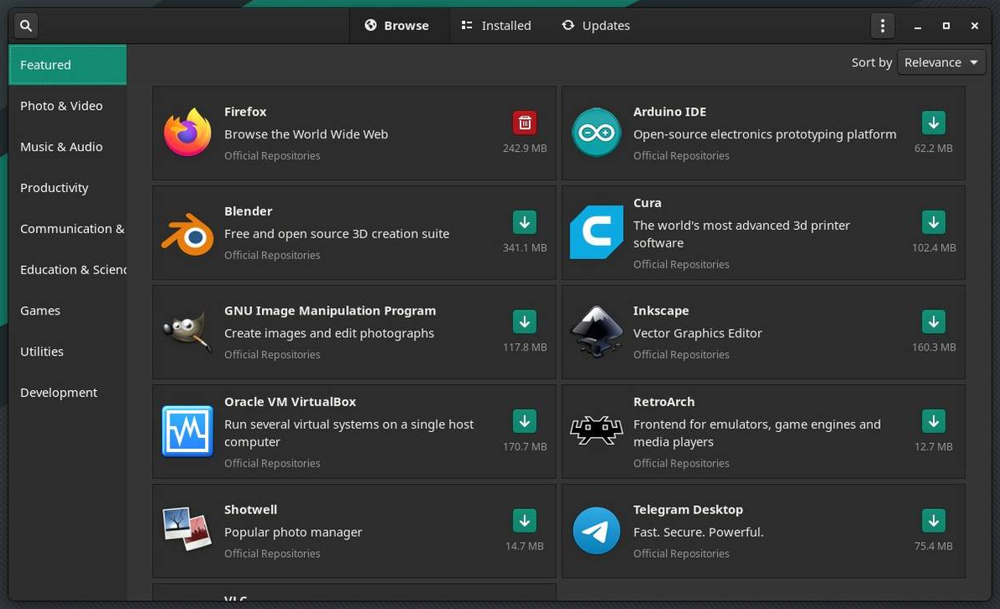

Overblik over Linux for windowsudvandrere
Software
Der er flere måder at installere programmer på. Den mest robuste (og i de fleste tilfælde foretrukne) metode er at bruge "official repositories", altså i Manjaros tilfælde de programmer, der ligger på Manjaros officielle servere og mirrors. I nogle tilfælde er man dog nødt til, eller bedre stillet ved, at bruge alternative metoder.
Officielle pakker
Pacman er Arch Linux's package manager. Det er det program, der holder styr på operativsystemet og det meste af den software, der er installeret. Programmer og libraries (programudvidelser) kaldes i styresystemssammenhænge for pakker. Package manageren holder styr på, hvilke ting der er afhængige af hvilke andre ting, klarer versionsstyring på tværs af de enkelte pakker, opdaterer systemkonfiguration, på baggrund af hvad der er og bliver installeret, og så videre. Pacman står for at koordinere installation og vedligeholdelse af software og holde styr på konfigurationen af software i forhold til det underliggende system.
Systemopdateringer kan automatiseres og sættes i skema, så du fx får nye opdateringer hver uge eller hver måned. Manjaros package manager hedder Pamac og er en grafisk frontend for Pacman. Pamac understøtter dog også andre kilder til software end de officielle repoer, så du kan holde styr på det hele ét sted.

Flatpak
Flatpak er gigapopulært som alternativ til at installere software via styresystemets package manager. Det skyldes flere ting: For det første er Flatpaks selvstændige og indeholder alle de filer og udvidelser, der skal til for at køre dem. De kan derfor køre på et hvilket som helst linuxsystem, uanset hvad der er installeret på systemet. For det andet er Flatpaks isolerede fra resten af systemet, så de bor i et lukket område og kan i udgangspunktet ikke tilgå resten af systemet. I praksis giver man dog ofte Flatpaks lov til fx at skrive til og læse fra /home, så man kan gemme filer og den slags.
Flatpak er integreret i Pamac og kan installeres derfra. Man kan dog også gøre det via kommandolinjen, hvor man som altid også har flere muligheder, men det er ikke påkrævet til de mest basale handlinger. Flatpaks bor på Flathub, hvor man kan kigge rundt og læse om de forskellige programmer. De kalder sig selv en "App Store" til Linux, og det er en god analogi.
AppImage
Lissom Flatpak er AppImage en selvstændig fil, der kan køre uafhængigt af det specifikke styresystem. Det er på mange måder en endnu lettere metode end Flatpak, da AppImages bare er enkelt filer, som man dobbeltklikker på for at køre og bare sletter for at fjerne. Det er ikke så mange ting, der distribueres via AppImage.
Eksekverbare filer uden videre
Hvis ellers man har de systembiblioteker og programmer, et linuxprogram er afhængigt af, kan man også bare køre den binære programfil uden videre. Til grundlæggende software uden for mange specielle krav til systemsoftware er det en let og ligetil metode. Bemærk i øvrigt, at filendelser ikke bruges til normale programfiler. Du kan dog også støde på programmer, som er indlejret i shell scripts, og de vil som regel have filendelsen .sh. For at køre shell scripts er der nogle særlige tilladelser og måder at skrive kommandoer på, man skal kende, men det er ikke så vigtigt lige nu og her.
Wine
Wine er det traditionelle program til at køre windowsprogrammer på Linux. Navnet er et såkaldt rekursivt akronym og står for "Wine Is Not an Emulator". Programmet er et kompatibilitetslag, som er en slags kortlægning af funktionalitet de to styresystemer imellem, hvor systemkald til Windows bliver omdirigeret til de tilsvarende systemkald på Linux. Det er en vigtig forskel fra emulatorer, da der med et kompatibilitetslag ikke er særligt meget ekstra arbejde for systemet at udføre.
I forbindelse med Wine (og Proton; mere herunder) støder man på begrebet prefix. Det er i praksis en mappe på harddisken, hvor der ligger et helt funktionelt C-drev som på en windowscomputer. De programmer, man kører, vil så køre inde i det prefix og betragte mappens indhold som C-drevet på den virtuelle windowscomputer. Som regel har man et hovedprefix i systemet, hvor de fleste windowsprogrammer kører, men man har også mulighed for at lave nye prefixes, hvis man vil holde tingene adskilt. Alle de spil, man installerer, bliver i udgangspunktet installeret i separate prefixes.
Spil
Der er flere måder at køre windowsspil under Linux. Steam er selvfølgelig den største og letteste måde, og til andre launchers og separate spil er der programmer som Lutris, Heroic Games Launcher (og Bottles, som er en ligefrem grafisk frontend for Wine). De tre sidstnævnte er mere eller mindre funktionsrige frontends for Wine og emulatorer. Jeg bruger Steam og Lutris, men Heroic Games Launcher er også ret populær til spil, og Bottle er en god general purpose frontend for Wine.
Proton
Proton er Valves videreudvikling af Wine, som er specielt udviklet til spil og til at køre steamspil. Det er Proton, der er skyld i, at man som computerspilsfan kan bruge Linux. Når man installerer Steam på Linux, er den nyeste stabile udgave af Proton med, og man har endda mulighed for at køre den allernyeste udgave ved at skifte til Proton Experimental i opsætningen; det kan få nogle spil til at virke, som ikke virker med den stabile udgave. Proton bruger Vulkan til grafikhåndtering i stedet for DirectX og fungerer dermed som bro mellem de to.
I stedet for at bruge Valves officielle Proton kan man vælge at bruge GE-Proton. "GE" står for GloriousEggroll, som er navnet på en virkelig dygtig gut, der har taget Proton endnu længere end Valve. Det er cutting edge, men de folk, der vedligeholder det, er som regel hurtigere ude med fixes og opdateringer end Valve, og det kan godt betale sig at bruge GE-Proton. Man installerer det ved at pakke det ud inde i steamfolderen det rigtige sted, og derefter kan man vælge at bruge det som kompatibilitetslag i Steams standardopsætning. Ulempen her er, at man manuelt skal opdatere til den nyeste version, men der er nogle værktøjer, der gør det relativt ligetil, bl.a. en Flatpak, der hedder ProtonUp-Qt; med den kan man holde styr på Proton med en grafisk brugerflade.
Slutteligt kan det bemærkes, at nogle spil kører hurtigere og bedre via Proton end de gør i Windows, fordi kompatibilitetslaget ikke tilfører systemet særligt meget mere arbejde, og det lille ekstra arbejde mere end opvejes af Linux's hastighed og effektivitet i forhold til Windows.
Steam
Steam er i sagens natur meget godt understøttet i Linux efterhånden. Man kan installere det som Flatpak, og det gjorde jeg selv engang, men det gav mig en række problemer, og derfor installerer vi det gennem Manjaros officiel repo i stedet. Når det er installeret, fungerer det fuldstændig som på Windows.
Lutris
Steam er til steamspil, og Lutris er til "alt andet". Lutris bruger også Proton, men opdaterer automatisk til nyeste udgave. Lutris kan integreres med alle spiludbydere som GOG, Epic, EA, og sågar også Steam, så man kan tilgå de spil, man ejer, direkte gennem Lutris og installere dem uden videre. Man kan også installere emulatorer til fx Amiga eller Playstation og administrere det i Lutris. Lutris giver derudover mulighed for at håndtere Wine-prefixes og køre exe-filer inde i prefixes for fx at installere DLC og den slags. Det er lidt mindre ligetil end Steam og giver nogle gange lidt hovedpine, men overordnet set fungerer det godt. Nogle gange skal man dog dreje lidt på et par knapper og slå lidt op på nettet for at få det til at virke.
Lutris ser sådan her ud:

Begreber
Du kommer til at støde på begreber, som det er rart at kende betydningen af. Her er nogle af dem.
kernel
Kernen i Linux hedder the Linux kernel, linuxkernen. Tænk på den som linket mellem den software, du har installeret, og hardwaren på computeren. Den holder styr på processer, hukommelse, CPU, filer, netværk og så videre. Det er stadig Linus Torvalds, der står i spidsen for udviklingen af kernen, men der er tusindvis af mennesker involveret. Linuxkernen er modulær, så selvom det er en enorm ting alt i alt, bruges kun de ting, der er relevante for din computer.
Der er en række centrale konfigurationsfiler, der altid er sammensat til din helt præcise systemkonfiguration. Derfor vil du også opleve, at nogle af disse konfigurationsfiler vil blive genskabt fra bunden, når du kører en systemopdatering. Det er med til at sikre, at systemet er helt tight og optimeret.
dependency
Når du installerer software, kan det enkelte program afhænge af et andet program eller en programudvidelse (et library). Hvis program A kun virker, hvis program B er installeret, så siger man, at program B er en dependency for program A. I dagligdagen vil du støde på det, når du installerer og afinstallerer software. Du vælger at installere ét program, men Pacman/Pamac spørger, om du vil installere 20 programmer. Det er, fordi de 19 af programmerne er dependencies for det program, du prøver at installere. Det er helt normalt. Når du afinstallerer software, kan du vælge at fjerne dependencies også; Pacman/Pamac vil sørge for kun at fjerne de dependencies, der ikke er brugt af andet software, så det er i udgangspunktet en sikker handling.
root
Når du bruger Linux, er du logget på som normal bruger. Der er også noget, der hedder en superbruger. Superbrugerkontoen hedder traditionelt set root, og man snakker om root access enten i betydningen "logget ind som root" eller i betydningen "med tilladelse til alle handlinger". På mange moderne desktopinstallationer af Linux er root deaktiveret, så man ikke skifter konto, men i stedet er afhængig af midlertidigt at få superbrugerrettigheder, mens man udfører handligner, der kræver root access.
sudo
For at få superbrugerrettigheder midlertidigt er der en kommando, der hedder sudo, som står for "superuser do", altså "foretag den her handling som superbruger". I praksis vil det at få superbrugerrettigheder tage form som en popup på desktoppen, hvor du bare skal skrive dit password, men hvis du skulle have brug for at køre en kommando i terminalen, skriver du bare sudo foran kommandoen. For at køre Pacman, skal du fx skrive sudo pacman.
git
Git er et versionsstyringssystem. På det offentlige internet bruger langt de fleste mennesker Github, som ejes af Microsoft, men der er også alternativer som Codeberg, og nogle større firmaer har sågar et internt gitsystem. Selve git er udviklet af Linus Torvalds, manden bag Linux. I dagligdagen vil du opleve, at en masse open source-programmer og deres dokumentation ligger på Github, og når du bruger Pacman, kan du støde på pakker, der hedder pakkenavn-git; det betyder som regel, at den pakke vil blive installeret, ved at den nyeste version hentes direkte fra Github og bliver compilet på din computer. Ikke så vigtigt; bare noget at være beredt på, hvis en installation pludselig begynder at compile kildekode.
desktop environment
Den grafiske brugerflade af styresystemet. Du bruger KDE Plasma, og det er sammen med Gnome de to helt store. Der er dog en række alternativer til alle mulige snævre behov, som Cinnamon, Xfce, COSMIC mv. KDE er det mest robuste, traditionelle og i mine øjne brugervenlige valg.
window manager og compositor
Desktop environments er afhængige af window manager og compositor for at køre den grafiske brugerflade, og det er naturligvis ikke supervigtigt at forholde sig til. Det er dog rart at kende til to compositing window managers, der hedder X11 og Wayland. Stort set alle grafiske linuxinstallationer bruger enten den ene eller den anden. X11 er den gamle spiller på banen, men i mange år har der været et projekt i gang for at lave et mere moderne og sikkert alternativ: Wayland. Wayland er kommet så langt, at det nu er standard i flere af de store distributioner. Der har historisk set været knas mellem nVidia og Wayland, men de problemer blev mere eller mindre løst sidste år. Du kan dog støde på samtaler, især ældre samtaler, på nettet, hvor de problemer er i fokus, men det burde ikke være relevant længere.
Det er muligt at køre en grafisk brugerflade kun med en window manager, og det gør mange af de mere nørdede tekstfanatikere. De er særligt glade for tiling window managers, der automatisk tilpasser vinduers størrelse til at fylde hele skærmen. Et kaninhul til en regnvejrsdag.
Nyttige kommandoer og fif
Gamemode er et program, der optimerer systemet til spil midlertidigt, mens spillet rent faktisk kører. Det installerer vi også. For at køre spil med "gamemode" og maks. 60 frames i sekundet, plus et par ekstra optimeringer, tilføjes følgende til launch options i Steam for det enkelte spil:
gamemoderun DXVK_FRAME_RATE=60 DXVK_ASYNC=1 __GL_SHADER_DISK_CACHE=1 __GL_SHADER_DISK_CACHE_SKIP_CLEANUP=1 STAGING_SHARED_MEMORY=1 %command%

For at opdatere systemet med de nyeste pakker via kommandolinjen:
sudo pacman -Syu
Support
Hvis du har brug for hjælp og vil prøve på egen hånd, er der rigtigt mange ressourcer på nettet skrevet og vedligeholdt af brugere med masser af info og guides. Her er et par af dem:
Almene søgemaskiner
Det er som regel et godt første skridt at google sit problem, så der kommer links til forskellige forummer og wikier med de mest relevante resultater øverst. Du kan tilføje "manjaro" eller "arch" til søgningen for at få løsninger, der kan anvendes direkte i dit eget system. Vær dog opmærksom på, at der pga. den minimale opsætning af systemet og det brede udvalg af software kan være løsninger, der involverer programmer, du ikke har installeret. I sådan nogle tilfælde kan du overveje, om du vil installere de programmer eller kigge efter en anden løsning.
Manjaro har deres egen wiki med guides til at gøre forskellige almindelige ting. Det er brugervenligt og let at overskue, men hvis man skal grave dybere i et eller andet, er det en god ide at besøge Arch-wikien i stedet.
Arch Linux er kendt for at have den bedste wiki i linuxverdenen, og den er opdateret og ufatteligt omfattende. Den er ret tilgængelig, men den har samtidig så grundig og dybdegående info, at det kan være lidt overvældende. Der er dog svar på stort set alt i verden.